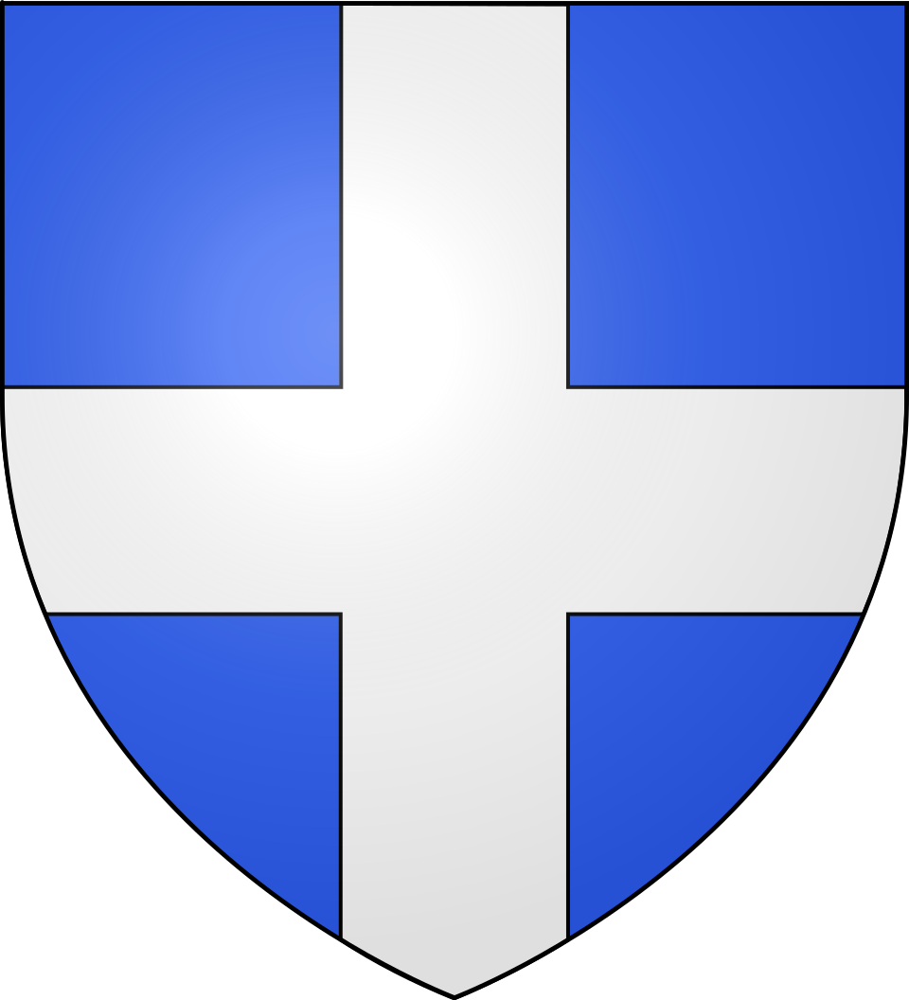
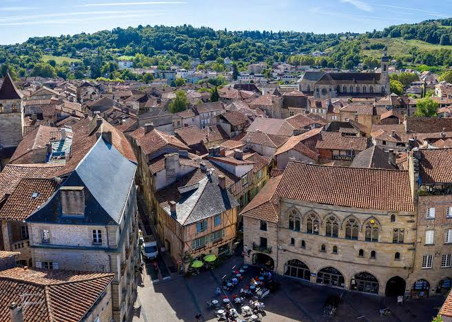

Figeac
la Cité de Champollion


⟹ Ville natale de Jean-François Champollion ⟸

La légende veut qu'une colombe, dessinant une croix dans le ciel sous les yeux de Pépin le Bref, ait désigné l'emplacement de Figeac. Plus sûrement, c'est en 838 que des moines bénédictins fondent une abbaye à l'endroit de l'actuelle église Saint-Sauveur : paysans et artisans s'installent alentour, et la ville prend forme au fil des siècles, devenant une cité marchande prospère entre Quercy et Rouergue.

La ville doit sa renommée mondiale à l'enfant du pays Jean-François Champollion, né en 1790, qui parvient en 1822 à percer le mystère des hiéroglyphes égyptiens grâce à la pierre de Rosette. Son frère aîné Jacques-Joseph, également érudit, l'accompagne dans ses recherches et veille à faire connaître son œuvre après sa mort prématurée en 1832.
Le 14 septembre 1822, en comprenant enfin le principe de l'écriture hiéroglyphique, Champollion se serait exclamé : « Je tiens mon affaire ! », avant de s'évanouir de fatigue et d'émotion.
— Tradition rapportée sur le déchiffrement des hiéroglyphesAujourd'hui labellisée Ville d'Art et d'Histoire, Figeac a su préserver l'une des plus vastes vieilles villes médiévales de France, où se mêlent maisons à pans de bois, hôtels particuliers et vestiges de son riche passé de cité marchande.
Né à Figeac en 1790, Jean-François Champollion consacre sa vie à l'étude des langues anciennes. En s'appuyant sur la pierre de Rosette — une stèle bilingue gravée en hiéroglyphes, en démotique et en grec, découverte en Égypte en 1799 — il parvient le 14 septembre 1822 à percer le principe de l'écriture hiéroglyphique, fondant ainsi l'égyptologie moderne. Sa ville natale honore cette découverte à travers un parcours culturel unique en Europe.
Grand marché du samedi : chaque samedi matin, la place Carnot et la place des Écritures s'animent au rythme des cabécous, du Rocamadour, des melons du Quercy, du safran et de l'agneau fermier.
Estivales et animations culturelles : concerts et spectacles rythment l'été dans les ruelles et les cours médiévales de la vieille ville.
Alentours : les vallées du Lot et du Célé offrent de nombreux sites troglodytiques et villages perchés, comme Cardaillac et Capdenac-le-Haut, à quelques kilomètres de Figeac.
Meilleure période : le printemps et l'été pour profiter pleinement des ruelles médiévales, des animations et des vallées environnantes.
Marché : chaque samedi matin, sous la halle métallique du XIXe siècle de la place Carnot.
Se loger : hôtels et chambres d'hôtes au cœur de la vieille ville ; l'Office de Tourisme des vallées du Lot et du Célé propose des visites guidées sur les pas de Champollion.